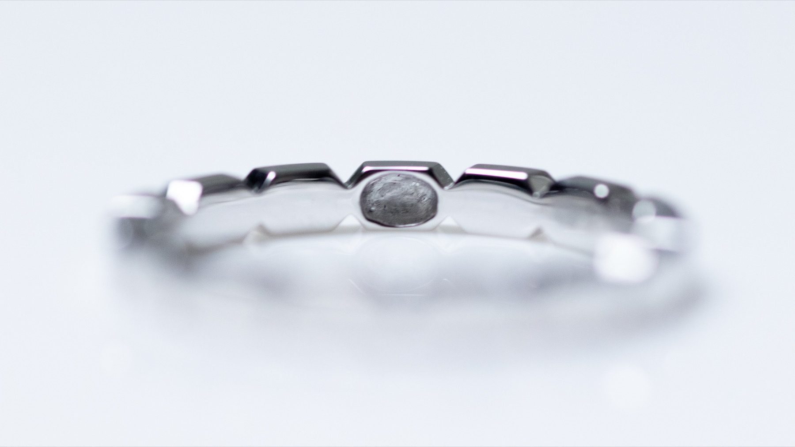

Everything you need to know about Rion — the hair, the process, the jewel, and the delivery. If your question is not here, send us a message on WhatsApp, Instagram DM, or email.
Memorial jewellery is a jewel that encloses the hair of a loved one or a beloved pet. The hair is completely sealed inside the ring or pendant — invisible from the outside but permanently close to you.
Any person's hair — a parent, a child, a spouse, a grandparent, a close friend. We also accept pet hair (dogs, cats, and others).
Hair from a person who has passed away is accepted, as is hair from someone living — many of our clients create pieces to honour a loved one they are still with, while they can.
Multiple people's hair can be sealed together in one piece — ask us about this option.Very little — approximately 1 to 5 strands is sufficient. No cutting is required; naturally shed hair (from a comb or brush) is perfectly fine. Even a single strand of 1 cm or less is sufficient. We include full instructions in your hair collection kit.
A small hole is drilled into the ring or necklace. Your hair is carefully placed inside by hand, then the opening is sealed with a cap of the same material — K18 gold or Pt900 platinum. The jewel is then completely sealed, making it watertight. The hair is invisible from the outside; the jewel looks like a conventional fine jewel.

We photograph the process before, during, and after sealing, and send these to you via WhatsApp, Instagram DM, or email. This photo report is included with every order.
No. The complete seal is permanent. Hair is one of the most durable biological materials — it does not decompose in the absence of moisture and oxygen, both of which are excluded by the seal. Rion pieces are designed for a lifetime of daily wear and beyond.
Yes. We can seal hair from more than one person — or from a person and a pet — inside the same chamber. This is available on all standard series and is a popular choice for those who want to carry more than one loved one close.
Please let us know at the time of enquiry so we can prepare accordingly.If you are collecting hair from a loved one who has passed, a funeral home, hospice, or family member can often assist. For hair that was saved — from a haircut, a brush, or similar — this is entirely acceptable. Please contact us and we will advise you personally on the best approach.
All Rion jewels are made in K18 Gold (Yellow, White, or Pink) or Platinum Pt900 — both of the highest quality, sourced and crafted entirely in Japan. For Series C (Birthstone Ring) and Series D (Half Eternity Ring), natural diamonds or gemstones are included as specified.
Yes. Inner engraving is available on all ring designs — English characters only. A name, a date, a short phrase, or any combination. The engraving is done on the inner band and is visible only to you when you remove the ring. Spaces are not counted as characters.
1–10 characters: AED 230 · From the 11th character: + AED 23 each · Please specify at time of order confirmation.A ring size gauge is included in your hair collection kit. Simply try the gauge and confirm your size when you return your hair. We work in US sizes (1–12, half sizes available). If you already know your size, you can tell us at the time of order.
Resizing is possible in some cases, depending on the design. However, because the sealed hair chamber is built into the band, resizing requires returning the piece to Japan and can take 2–3 months. We strongly recommend confirming your size carefully before production begins. Our ring gauge kit makes this easy.
Yes. Rion pieces are designed for a lifetime of daily wear. The complete seal is water-resistant — the jewel is safe for handwashing, light rain, and daily use. We recommend removing it during swimming, heavy exercise, or contact with harsh chemicals, which is standard advice for all fine jewellery.
Every Rion piece comes with complimentary lifetime polishing in Japan. At any time — years or decades after purchase — you may send your jewel back to our atelier, and we will polish and restore it at no charge. You pay only the postage. This service is included with all pieces, at no extra cost.
All orders are placed via WhatsApp, Instagram DM, or email. Browse our collection, choose your preferred series and material, and send us a message. Our team will guide you through every step — confirming design, size, and engraving, then issuing your invoice. See our How to Order page for the full step-by-step process.
Approximately 5.5 months from the date we receive your hair. This covers the full hand-crafting process: hair sealing, metal casting, stone setting (where applicable), finishing, engraving, and quality control. We update you via WhatsApp at each major stage.
Engraving and birthstone selection can be changed up to the point at which production begins. Design and material cannot be changed once the order is confirmed.
As each piece is made entirely to your order and cannot be resold, no refund is offered once production has begun. Please see our Shipping & Returns page for full policy details.
We communicate in English, Arabic, and Japanese. Our website is also available in all three languages — use the language selector in the top navigation. You are welcome to reach us in whichever language you prefer.
Yes. If none of our standard series feel right, we create fully bespoke commissions — designed from scratch with our staff. There are no templates and no limits: any form, any material, any combination of stones. Bespoke commissions start from AED 18,000 DDP and take approximately 6 months.
Contact us via WhatsApp to begin a bespoke consultation — no commitment required.DDP stands for Delivered Duty Paid. It means that all import duties and taxes — including UAE customs duty and 5% VAT — are included in the price you pay. There are no additional charges on delivery, ever.
This is our standard for all orders to Dubai and the UAE. The price you see is the price you pay.
Your jewel is shipped via DHL Express from Japan — fully insured for its full value, with tracking. You will receive a tracking number as soon as your order is dispatched. All customs clearance is handled by Rion.
We ship to Dubai, UAE and Kuwait — DDP, with all import duty and VAT prepaid, and no charges on delivery. We also ship internationally to other countries and regions upon request. Shipping terms may vary depending on the destination. Please message us on WhatsApp to confirm availability for your country.
We accept AED, USD, and Kuwaiti Dinar (KWD). All prices are listed in AED as the base currency — USD and KWD equivalents are provided at the current exchange rate at the time of your order. Payment methods include international bank transfer (SWIFT) and credit card (Visa · Mastercard · American Express · Diners Club · JCB — via secure Stripe invoice link). Full payment is required before production begins.
Because each piece is made entirely to your order — with your hair, to your specifications — it cannot be returned or exchanged unless there is a manufacturing defect.
If there is a defect, we will repair or remake the piece at no charge. We take quality extremely seriously and subject every piece to rigorous inspection before shipping. Please see our Shipping & Returns page for full details.
All personal information — including your name, address, and the name of your loved one — is handled with complete discretion and is never shared with third parties. We understand the deeply personal nature of what we do. Please see our Privacy Policy for full details.
Our team is available on WhatsApp in English, Arabic, and Japanese. We typically respond within a few hours.
💬 Message Us on WhatsApp